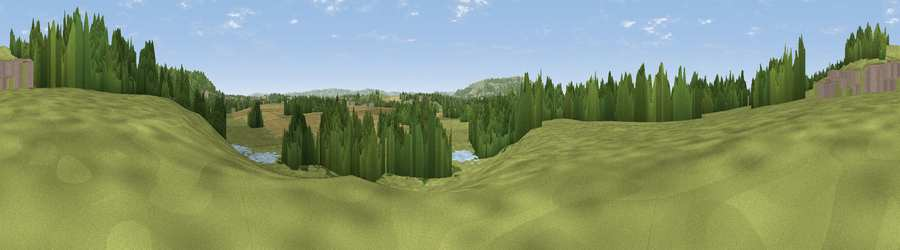

Viewpoint near Fladbury
#35492 in England · top 85% of its area beats it · near FladburyThe view, rendered

A 360° render of this exact spot computed from the terrain model, tree cover and land cover — summer colours, afternoon light, calibrated against photographs of famous viewpoints. Real trees, hedges and buildings will differ in detail.
The panorama
Grey silhouette: terrain skyline in each direction (720 bearings, Earth curvature and refraction included). Dashed green: skyline with trees (+15 m) and buildings (+8 m) as obstacles. Blue strip: how far the ground is visible on each bearing.
Where the view opens
Wedge length = distance to the farthest visible ground on that bearing (vegetation-aware). Rings at 10, 25 and 50 km.
What fills the view
55% grassland · 28% woodland · 14% cropland · 3% water ·
Angular shares of the visible panorama (visual magnitude), not map area. Landscape diversity 0.48 (0–1 Shannon).
Key numbers
More beautiful places nearby
The staircase of upgrades: each row has a higher view potential than everything closer. Driving times are estimates from straight-line distance, calibrated against real road routing — check an actual route before setting out.
| Place | Direction | Drive | Score |
|---|---|---|---|
| Viewpoint near Fladbury | NNW · 1 km | ~2 min | 61.4 |
| Viewpoint near Lenchwick | ENE · 2 km | ~5 min | 66.0 |
| Viewpoint near Elmley Castle | SSW · 6 km | ~13 min | 76.9 |
| Viewpoint near Elmley Castle | SSW · 7 km | ~15 min | 79.5 |
| Viewpoint near Elmley Castle | SSW · 8 km | ~16 min | 80.5 |
| Bredon Hill | SSW · 8 km | ~16 min | 83.0 |
| North Hill | W · 23 km | ~38 min | 86.8 |
| Worcestershire Beacon | W · 23 km | ~38 min | 87.1 |
52.12089, -2.00430 · source: osm viewpoint · position refined by local search. Computed location — check access rights before visiting.